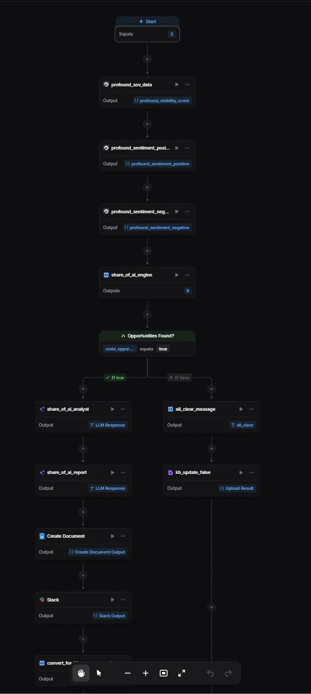

Pull the data
Every week the agent pulls share of voice by topic, plus positive and negative sentiment, from Profound.
AI Visibility · Agent
An agent that checks whether a brand has a presence problem or a perception problem in AI search.
Built solo in 8.5 hours at Profound's marketing engineering hackathon, where I was 1 of 50 builders selected from thousands worldwide. Built on Profound's agent builder.
01
Most tools measure whether a brand shows up in AI answers. That's presence.
A brand can show up often and still be described badly, and that's perception.
The two need different fixes. A presence problem needs more content AI can cite. A perception problem needs a change in how the brand is described.
Fixing the wrong one wastes the content budget.
02
Every week the agent pulls share of voice by topic, plus positive and negative sentiment, from Profound.
For each topic, a script compares the brand with the strongest competitor.
Each topic goes into Defend, Fight, or Abandon.
An LLM writes the diagnosis and content briefs, and the report goes to Slack and a Google Doc.
03
The brand already leads the top competitor on this topic. Keep it that way.
The brand trails by 5 points or less. It's winnable, so the agent writes a specific content brief.
The brand trails by more than that. Not worth chasing right now, so the budget goes elsewhere.
The 5-point threshold is the default and can be adjusted.
04
Each topic also gets a problem type. A presence problem means the brand trails the top competitor by more than the threshold. A perception problem means more than 45% of the sentiment about the brand is negative.
Type A · Presence yes · Perception yes
Fix how AI describes the brand first, then build content volume.
Type B · Presence yes · Perception no
Create content AI can cite.
Type C · Presence no · Perception yes
Reshape how AI describes the brand.
Type D · Presence no · Perception no
A small optimization closes the gap. A quick win.
05

06
Every Monday the agent sends a message like this to Slack. The brand and numbers below are sample data.
07
Replaces about 6 hours of weekly analyst work (my estimate) with about 3 minutes.
08
Break sentiment down by topic, and weight topics by how much volume they carry.